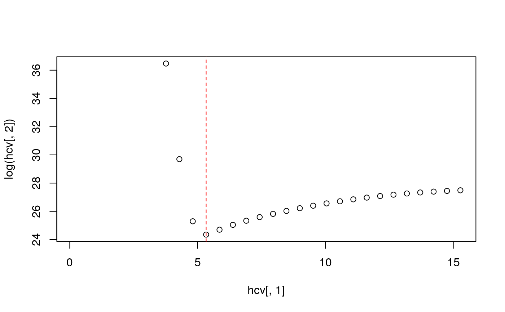

<!-- Generated by pkgdown: do not edit by hand -->
<!DOCTYPE html>
<html>
  <head>
  <meta charset="utf-8">
<meta http-equiv="X-UA-Compatible" content="IE=edge">
<meta name="viewport" content="width=device-width, initial-scale=1.0">

<title>Jointly optimal bandwidth selection for the spatial relative risk function — LSCV.risk • sparr</title>

<!-- jquery -->
<script src="https://code.jquery.com/jquery-3.1.0.min.js" integrity="sha384-nrOSfDHtoPMzJHjVTdCopGqIqeYETSXhZDFyniQ8ZHcVy08QesyHcnOUpMpqnmWq" crossorigin="anonymous"></script>
<!-- Bootstrap -->

<link href="https://maxcdn.bootstrapcdn.com/bootstrap/3.3.7/css/bootstrap.min.css" rel="stylesheet" integrity="sha384-BVYiiSIFeK1dGmJRAkycuHAHRg32OmUcww7on3RYdg4Va+PmSTsz/K68vbdEjh4u" crossorigin="anonymous">
<script src="https://maxcdn.bootstrapcdn.com/bootstrap/3.3.7/js/bootstrap.min.js" integrity="sha384-Tc5IQib027qvyjSMfHjOMaLkfuWVxZxUPnCJA7l2mCWNIpG9mGCD8wGNIcPD7Txa" crossorigin="anonymous"></script>

<!-- Font Awesome icons -->
<link href="https://maxcdn.bootstrapcdn.com/font-awesome/4.6.3/css/font-awesome.min.css" rel="stylesheet" integrity="sha384-T8Gy5hrqNKT+hzMclPo118YTQO6cYprQmhrYwIiQ/3axmI1hQomh7Ud2hPOy8SP1" crossorigin="anonymous">

<!-- clipboard.js -->
<script src="https://cdnjs.cloudflare.com/ajax/libs/clipboard.js/1.7.1/clipboard.min.js" integrity="sha384-cV+rhyOuRHc9Ub/91rihWcGmMmCXDeksTtCihMupQHSsi8GIIRDG0ThDc3HGQFJ3" crossorigin="anonymous"></script>

<!-- sticky kit -->
<script src="https://cdnjs.cloudflare.com/ajax/libs/sticky-kit/1.1.3/sticky-kit.min.js" integrity="sha256-c4Rlo1ZozqTPE2RLuvbusY3+SU1pQaJC0TjuhygMipw=" crossorigin="anonymous"></script>

<!-- pkgdown -->
<link href="../pkgdown.css" rel="stylesheet">
<script src="../pkgdown.js"></script>


<meta property="og:title" content="Jointly optimal bandwidth selection for the spatial relative risk function — LSCV.risk" />

<meta property="og:description" content="Methods to find a jointly optimal, common case-control isotropic bandwidth for use in
estimation of the fixed or adaptive kernel-smoothed relative risk function." />
<meta name="twitter:card" content="summary" />


<!-- mathjax -->
<script src='https://mathjax.rstudio.com/latest/MathJax.js?config=TeX-AMS-MML_HTMLorMML'></script>

<!--[if lt IE 9]>
<script src="https://oss.maxcdn.com/html5shiv/3.7.3/html5shiv.min.js"></script>
<script src="https://oss.maxcdn.com/respond/1.4.2/respond.min.js"></script>
<![endif]-->


  </head>

  <body>
    <div class="container template-reference-topic">
      <header>
      <div class="navbar navbar-default navbar-fixed-top" role="navigation">
  <div class="container">
    <div class="navbar-header">
      <button type="button" class="navbar-toggle collapsed" data-toggle="collapse" data-target="#navbar">
        <span class="icon-bar"></span>
        <span class="icon-bar"></span>
        <span class="icon-bar"></span>
      </button>
      <span class="navbar-brand">
        <a class="navbar-link" href="../index.html">sparr</a>
        <span class="label label-default" data-toggle="tooltip" data-placement="bottom" title="Released package">2.2.12</span>
      </span>
    </div>

    <div id="navbar" class="navbar-collapse collapse">
      <ul class="nav navbar-nav">
        <li>
  <a href="../index.html">
    <span class="fa fa-home fa-lg"></span>
     
  </a>
</li>
<li>
  <a href="../reference/index.html">Reference</a>
</li>
<li class="dropdown">
  <a href="#" class="dropdown-toggle" data-toggle="dropdown" role="button" aria-expanded="false">
    Articles
     
    <span class="caret"></span>
  </a>
  <ul class="dropdown-menu" role="menu">
    <li>
      <a href="../articles/fmd_animation/fmd_animation.html">Foot and Mouth disease animation</a>
    </li>
    <li>
      <a href="../articles/fmd_interactive/fmd_interactive.html">Foot and mouth disease interactive</a>
    </li>
    <li>
      <a href="../articles/pbc_interactive/pbc_interactive.html">Primary biliary cirrhosis interactive</a>
    </li>
  </ul>
</li>
<li>
  <a href="../news/index.html">Changelog</a>
</li>
      </ul>
      
      <ul class="nav navbar-nav navbar-right">
        <li>
  <a href="https://github.com/tilmandavies/sparr">
    <span class="fa fa-github fa-lg"></span>
     
  </a>
</li>
      </ul>
      
    </div><!--/.nav-collapse -->
  </div><!--/.container -->
</div><!--/.navbar -->

      
      </header>

<div class="row">
  <div class="col-md-9 contents">
    <div class="page-header">
    <h1>Jointly optimal bandwidth selection for the spatial relative risk function</h1>
    <small class="dont-index">Source: <a href='https://github.com/tilmandavies/sparr/blob/master/R/LSCV.risk.R'><code>R/LSCV.risk.R</code></a></small>
    <div class="hidden name"><code>LSCV.risk.Rd</code></div>
    </div>

    <div class="ref-description">
    
    <p>Methods to find a jointly optimal, common case-control isotropic bandwidth for use in
estimation of the fixed or adaptive kernel-smoothed relative risk function.</p>
    
    </div>

    <pre class="usage"><span class='fu'>LSCV.risk</span>(<span class='no'>f</span>, <span class='kw'>g</span> <span class='kw'>=</span> <span class='kw'>NULL</span>, <span class='kw'>hlim</span> <span class='kw'>=</span> <span class='kw'>NULL</span>, <span class='kw'>hseq</span> <span class='kw'>=</span> <span class='kw'>NULL</span>, <span class='kw'>type</span> <span class='kw'>=</span> <span class='fu'>c</span>(<span class='st'>"fixed"</span>,
  <span class='st'>"adaptive"</span>), <span class='kw'>method</span> <span class='kw'>=</span> <span class='fu'>c</span>(<span class='st'>"kelsall-diggle"</span>, <span class='st'>"hazelton"</span>, <span class='st'>"davies"</span>),
  <span class='kw'>resolution</span> <span class='kw'>=</span> <span class='fl'>64</span>, <span class='kw'>edge</span> <span class='kw'>=</span> <span class='fl'>TRUE</span>, <span class='kw'>hp</span> <span class='kw'>=</span> <span class='kw'>NULL</span>, <span class='kw'>pilot.symmetry</span> <span class='kw'>=</span> <span class='fu'>c</span>(<span class='st'>"none"</span>,
  <span class='st'>"f"</span>, <span class='st'>"g"</span>, <span class='st'>"pooled"</span>), <span class='kw'>auto.optim</span> <span class='kw'>=</span> <span class='fl'>TRUE</span>, <span class='kw'>seqres</span> <span class='kw'>=</span> <span class='fl'>30</span>, <span class='kw'>parallelise</span> <span class='kw'>=</span> <span class='fl'>NA</span>,
  <span class='kw'>verbose</span> <span class='kw'>=</span> <span class='fl'>TRUE</span>, <span class='no'>...</span>)</pre>
    
    <h2 class="hasAnchor" id="arguments"><a class="anchor" href="#arguments"></a>Arguments</h2>
    <table class="ref-arguments">
    <colgroup><col class="name" /><col class="desc" /></colgroup>
    <tr>
      <th>f</th>
      <td><p>Either a pre-calculated object of class <code><a href='bivariate.density.html'>bivden</a></code>
representing the `case' (numerator) density estimate, or an object of class
<code><a href='http://www.rdocumentation.org/packages/spatstat/topics/ppp'>ppp</a></code> giving the observed case data. Alternatively, if
<code>f</code> is <code><a href='http://www.rdocumentation.org/packages/spatstat/topics/ppp'>ppp</a></code> object with dichotomous
factor-valued <code><a href='http://www.rdocumentation.org/packages/spatstat/topics/marks'>marks</a></code>, the function treats the first
level as the case data, and the second as the control data, obviating the
need to supply <code>g</code>.</p></td>
    </tr>
    <tr>
      <th>g</th>
      <td><p>As for <code>f</code>, for the `control' (denominator) density; this
object must be of the same class as <code>f</code>. Ignored if, as stated above,
<code>f</code> contains both case and control observations.</p></td>
    </tr>
    <tr>
      <th>hlim</th>
      <td><p>An optional vector of length 2 giving the limits of the
optimisation routine with respect to the bandwidth. If unspecified, the
function attempts to choose this automatically.</p></td>
    </tr>
    <tr>
      <th>hseq</th>
      <td><p>An optional increasing sequence of bandwidth values at which to
manually evaluate the optimisation criterion. Used only in the case
<code>(!auto.optim &amp;&amp; is.null(hlim))</code>.</p></td>
    </tr>
    <tr>
      <th>type</th>
      <td><p>A character string; <code>"fixed"</code> (default) performs classical leave-one-out
cross-validation for a jointly optimal fixed bandwidth. Alternatively, <code>"adaptive"</code> utilises
multiscale adaptive kernel estimation (Davies &amp; Baddeley, 2018) to run the cross-validation
in an effort to find a suitable jointly optimal, common global bandwidth for the adaptive relative risk function. See `Details'.</p></td>
    </tr>
    <tr>
      <th>method</th>
      <td><p>A character string controlling the selector to use. There are
three types, based on either the mean integrated squared error (MISE)
(Kelsall and Diggle, 1995; default -- <code>method = "kelsall-diggle"</code>); a
weighted MISE (Hazelton, 2008 -- <code>method = "hazelton"</code>); or an
approximation to the asymptotic MISE (Davies, 2013 -- <code>method =
"davies"</code>). See `Details'.</p></td>
    </tr>
    <tr>
      <th>resolution</th>
      <td><p>Spatial grid size; the optimisation will be based on a
[<code>resolution</code> \(\times\) <code>resolution</code>] density estimate.</p></td>
    </tr>
    <tr>
      <th>edge</th>
      <td><p>Logical value indicating whether to edge-correct the density
estimates used.</p></td>
    </tr>
    <tr>
      <th>hp</th>
      <td><p>A single numeric value or a vector of length 2 giving the pilot
bandwidth(s) to be used for estimation of the pilot
densities for adaptive risk surfaces. Ignored if <code>type = "fixed"</code>.</p></td>
    </tr>
    <tr>
      <th>pilot.symmetry</th>
      <td><p>A character string used to control the type of
symmetry, if any, to use for the bandwidth factors when computing an
adaptive relative risk surface. See `Details'. Ignored if <code>type = "fixed"</code>.</p></td>
    </tr>
    <tr>
      <th>auto.optim</th>
      <td><p>Logical value indicating whether to automate the numerical
optimisation using <code>optimise</code>. If <code>FALSE</code>, the optimisation
criterion is evaluated over <code>hseq</code> (if supplied), or over a seqence of
values controlled by <code>hlim</code> and <code>seqres</code>.</p></td>
    </tr>
    <tr>
      <th>seqres</th>
      <td><p>Optional resolution of an increasing sequence of bandwidth
values. Only used if <code>(!auto.optim &amp;&amp; is.null(hseq))</code>.</p></td>
    </tr>
    <tr>
      <th>parallelise</th>
      <td><p>Numeric argument to invoke parallel processing, giving
the number of CPU cores to use when <code>!auto.optim</code>. Experimental. Test
your system first using <code><a href='http://www.rdocumentation.org/packages/parallel/topics/detectCores'>parallel::detectCores()</a></code> to identify the
number of cores available to you.</p></td>
    </tr>
    <tr>
      <th>verbose</th>
      <td><p>Logical value indicating whether to provide function progress
commentary.</p></td>
    </tr>
    <tr>
      <th>...</th>
      <td><p>Additional arguments such as <code>dimz</code> and <code>trim</code> to be passed to
the internal calls to <code><a href='multiscale.density.html'>multiscale.density</a></code>.</p></td>
    </tr>
    </table>
    
    <h2 class="hasAnchor" id="value"><a class="anchor" href="#value"></a>Value</h2>

    <p>A single numeric value of the estimated bandwidth (if
  <code>auto.optim = TRUE</code>). Otherwise, a list of two numeric vectors of equal
  length giving the bandwidth sequence (as <code>hs</code>) and corresponding CV
  function value (as <code>CV</code>).</p>
    
    <h2 class="hasAnchor" id="details"><a class="anchor" href="#details"></a>Details</h2>

    <p>Given the established preference of using a common bandwidth for both case
and control density estimates when constructing a relative
risk surface, This function calculates a `jointly optimal', common isotropic
LSCV bandwidth for the (Gaussian) kernel-smoothed relative risk function
(case-control density-ratio). It can be shown that choosing a bandwidth that
is equal for both case and control density estimates is preferable to
computing `separately optimal' bandwidths (Kelsall and Diggle, 1995). The user
can choose to either calculate a common smoothing parameter for a fixed-bandwidth
relative risk surface (<code>type = "fixed"</code>; default), or a common global bandwidth for
an adaptive risk surface (<code>type = "adaptive"</code>). See further comments below.</p>
    <ul>
<li><p><code>method = "kelsall-diggle"</code>: the function computes the
    common bandwidth which minimises the approximate mean integrated squared
    error (MISE) of the log-transformed risk surface (Kelsall and Diggle, 1995).</p></li>
<li><p><code>method = "hazelton"</code>: the function minimises a
    <em>weighted-by-control</em> MISE of the (raw) relative risk function
    (Hazelton, 2008).</p></li>
<li><p><code>method = "davies"</code>: the optimal bandwidth is
    one that minimises a crude plug-in approximation to the <em>asymptotic</em>
    MISE (Davies, 2013). Only possible for <code>type = "fixed"</code>.</p></li>
</ul>
    <p>For jointly optimal, common global bandwidth selection when <code>type = "adaptive"</code>, the
optimisation routine utilises <code><a href='multiscale.density.html'>multiscale.density</a></code>. Like <code><a href='CV.html'>LSCV.density</a></code>,
the leave-one-out procedure does not affect the pilot density, for which additional
control is offered via the <code>hp</code> and <code>pilot.symmetry</code> arguments. The user has the option of
obtaining a so-called <em>symmetric</em> estimate (Davies et al. 2016) via
<code>pilot.symmetry</code>. This amounts to choosing the same pilot density for
both case and control densities. By choosing <code>"none"</code> (default), the
result uses the case and control data separately for the fixed-bandwidth
pilots, providing the original asymmetric density-ratio of Davies and
Hazelton (2010). By selecting either of <code>"f"</code>, <code>"g"</code>, or
<code>"pooled"</code>, the pilot density is calculated based on the case, control,
or pooled case/control data respectively (using <code>hp[1]</code> as the fixed
bandwidth). Davies et al. (2016) noted some beneficial practical behaviour
of the symmetric adaptive surface over the asymmetric. (The pilot bandwidth(s), if not supplied in <code>hp</code>, are calculated
internally via default use of <code><a href='CV.html'>LSCV.density</a></code>, using the requested symmetric-based data set, or separately with respect to the case and control datasets <code>f</code> and <code>g</code> if
<code>pilot.symmetry = "none"</code>.)</p>
    
    <h2 class="hasAnchor" id="warning"><a class="anchor" href="#warning"></a>Warning</h2>

    <p>The jointly optimal bandwidth selector can be
computationally expensive for large data sets and fine evaluation grid
resolutions. The user may need to experiment with adjusting <code>hlim</code> to
find a suitable minimum.</p>
    
    <h2 class="hasAnchor" id="references"><a class="anchor" href="#references"></a>References</h2>

    <p>Davies, T. M. (2013), Jointly optimal bandwidth selection for
the planar kernel-smoothed density-ratio, <em>Spatial and Spatio-temporal
Epidemiology</em>, <b>5</b>, 51-65.</p>
<p>Davies, T.M. and Baddeley A. (2018), Fast computation of
spatially adaptive kernel estimates, <em>Statistics and Computing</em>, [to appear].</p>
<p>Davies, T.M. and Hazelton, M.L. (2010), Adaptive kernel
estimation of spatial relative risk, <em>Statistics in Medicine</em>,
<b>29</b>(23) 2423-2437.</p>
<p>Davies, T.M., Jones, K. and Hazelton, M.L.
(2016), Symmetric adaptive smoothing regimens for estimation of the spatial
relative risk function, <em>Computational Statistics &amp; Data Analysis</em>,
<b>101</b>, 12-28.</p>
<p>Hazelton, M. L. (2008), Letter to the
editor: Kernel estimation of risk surfaces without the need for edge
correction, <em>Statistics in Medicine</em>, <b>27</b>, 2269-2272.</p>
<p>Kelsall, J.E. and Diggle, P.J. (1995), Kernel estimation of relative risk,
<em>Bernoulli</em>, <b>1</b>, 3-16.</p>
<p>Silverman, B.W. (1986), <em>Density Estimation for Statistics and Data Analysis</em>,
Chapman &amp; Hall, New York.</p>
<p>Wand, M.P. and Jones, C.M., 1995. <em>Kernel Smoothing</em>, Chapman &amp; Hall,
London.</p>
    
    <h2 class="hasAnchor" id="see-also"><a class="anchor" href="#see-also"></a>See also</h2>

    <div class='dont-index'><p><code><a href='bivariate.density.html'>bivariate.density</a></code></p></div>
    

    <h2 class="hasAnchor" id="examples"><a class="anchor" href="#examples"></a>Examples</h2>
    <pre class="examples"><div class='input'>
</div><div class='input'>
<span class='fu'>data</span>(<span class='no'>pbc</span>)
<span class='no'>pbccas</span> <span class='kw'>&lt;-</span> <span class='fu'>split</span>(<span class='no'>pbc</span>)$<span class='no'>case</span>
<span class='no'>pbccon</span> <span class='kw'>&lt;-</span> <span class='fu'>split</span>(<span class='no'>pbc</span>)$<span class='no'>control</span>

<span class='co'># FIXED (for common h)</span>

<span class='fu'>LSCV.risk</span>(<span class='no'>pbccas</span>,<span class='no'>pbccon</span>)</div><div class='output co'>#&gt; Searching for optimal Kelsall-Diggle h in [0.1,15.278]...Done.</div><div class='output co'>#&gt; [1] 8.051627</div><div class='input'><span class='fu'>LSCV.risk</span>(<span class='no'>pbccas</span>,<span class='no'>pbccon</span>,<span class='kw'>method</span><span class='kw'>=</span><span class='st'>"hazelton"</span>)</div><div class='output co'>#&gt; Searching for optimal Hazelton h in [0.1,15.278]...Done.</div><div class='output co'>#&gt; [1] 3.078997</div><div class='input'><span class='no'>hcv</span> <span class='kw'>&lt;-</span> <span class='fu'>LSCV.risk</span>(<span class='no'>pbccas</span>,<span class='no'>pbccon</span>,<span class='kw'>method</span><span class='kw'>=</span><span class='st'>"davies"</span>,<span class='kw'>auto.optim</span><span class='kw'>=</span><span class='fl'>FALSE</span>)</div><div class='output co'>#&gt; ================================================================================</div><div class='input'><span class='fu'>plot</span>(<span class='no'>hcv</span>[,<span class='fl'>1</span>],<span class='fu'>log</span>(<span class='no'>hcv</span>[,<span class='fl'>2</span>]));<span class='fu'>abline</span>(<span class='kw'>v</span><span class='kw'>=</span><span class='no'>hcv</span>[<span class='fu'>which.min</span>(<span class='no'>hcv</span>[,<span class='fl'>2</span>]),<span class='fl'>1</span>],<span class='kw'>col</span><span class='kw'>=</span><span class='fl'>2</span>,<span class='kw'>lty</span><span class='kw'>=</span><span class='fl'>2</span>)</div><div class='img'></div><div class='input'>

<span class='co'># ADAPTIVE (for common h0)</span>

<span class='fu'>LSCV.risk</span>(<span class='no'>pbccas</span>,<span class='no'>pbccon</span>,<span class='kw'>type</span><span class='kw'>=</span><span class='st'>"adaptive"</span>)</div><div class='output co'>#&gt; Selecting pilot bandwidth(s)...
#&gt;  --f--
#&gt;  --g--
#&gt; Done.
#&gt;    [ Using hp(f) = 0.427712498752032 ; hp(g) = 0.286539611062715 ]
#&gt; Computing multi-scale estimates...
#&gt;  --f--
#&gt;  --g--
#&gt; Done.
#&gt; Searching for optimal h0 in [0.105866014203302, 13.7203855365642]...Done.</div><div class='output co'>#&gt; [1] 5.809374</div><div class='input'>
<span class='co'># change pilot bandwidths used</span>
<span class='fu'>LSCV.risk</span>(<span class='no'>pbccas</span>,<span class='no'>pbccon</span>,<span class='kw'>type</span><span class='kw'>=</span><span class='st'>"adaptive"</span>,<span class='kw'>hp</span><span class='kw'>=</span><span class='fu'>c</span>(<span class='fu'><a href='OS.html'>OS</a></span>(<span class='no'>pbccas</span>)/<span class='fl'>2</span>,<span class='fu'><a href='OS.html'>OS</a></span>(<span class='no'>pbccon</span>)/<span class='fl'>2</span>))</div><div class='output co'>#&gt; Computing multi-scale estimates...
#&gt;  --f--
#&gt;  --g--
#&gt; Done.
#&gt; Searching for optimal h0 in [0.108673683863955, 13.6719393206487]...Done.</div><div class='output co'>#&gt; [1] 3.754076</div><div class='input'>
<span class='co'># specify pooled-data symmetric relative risk estimator </span>
<span class='fu'>LSCV.risk</span>(<span class='no'>pbccas</span>,<span class='no'>pbccon</span>,<span class='kw'>type</span><span class='kw'>=</span><span class='st'>"adaptive"</span>,<span class='kw'>hp</span><span class='kw'>=</span><span class='fu'><a href='OS.html'>OS</a></span>(<span class='no'>pbc</span>),<span class='kw'>pilot.symmetry</span><span class='kw'>=</span><span class='st'>"pooled"</span>)</div><div class='output co'>#&gt; Computing multi-scale estimates...
#&gt;  --f--
#&gt;  --g--
#&gt; Done.
#&gt; Searching for optimal h0 in [0.11175854841505, 13.620321859812]...Done.</div><div class='output co'>#&gt; [1] 3.039816</div><div class='input'>
<span class='co'># as above, for Hazelton selector</span>
<span class='fu'>LSCV.risk</span>(<span class='no'>pbccas</span>,<span class='no'>pbccon</span>,<span class='kw'>type</span><span class='kw'>=</span><span class='st'>"adaptive"</span>,<span class='kw'>method</span><span class='kw'>=</span><span class='st'>"hazelton"</span>)</div><div class='output co'>#&gt; Selecting pilot bandwidth(s)...
#&gt;  --f--
#&gt;  --g--
#&gt; Done.
#&gt;    [ Using hp(f) = 0.427712498752032 ; hp(g) = 0.286539611062715 ]
#&gt; Computing multi-scale estimates...
#&gt;  --f--
#&gt;  --g--
#&gt; Done.
#&gt; Searching for optimal h0 in [0.105866014203302, 13.7203855365642]...Done.</div><div class='output co'>#&gt; [1] 1.905048</div><div class='input'><span class='fu'>LSCV.risk</span>(<span class='no'>pbccas</span>,<span class='no'>pbccon</span>,<span class='kw'>type</span><span class='kw'>=</span><span class='st'>"adaptive"</span>,<span class='kw'>method</span><span class='kw'>=</span><span class='st'>"hazelton"</span>,<span class='kw'>hp</span><span class='kw'>=</span><span class='fu'>c</span>(<span class='fu'><a href='OS.html'>OS</a></span>(<span class='no'>pbccas</span>)/<span class='fl'>2</span>,<span class='fu'><a href='OS.html'>OS</a></span>(<span class='no'>pbccon</span>)/<span class='fl'>2</span>))</div><div class='output co'>#&gt; Computing multi-scale estimates...
#&gt;  --f--
#&gt;  --g--
#&gt; Done.
#&gt; Searching for optimal h0 in [0.108673683863955, 13.6719393206487]...Done.</div><div class='output co'>#&gt; [1] 2.391366</div><div class='input'><span class='fu'>LSCV.risk</span>(<span class='no'>pbccas</span>,<span class='no'>pbccon</span>,<span class='kw'>type</span><span class='kw'>=</span><span class='st'>"adaptive"</span>,<span class='kw'>method</span><span class='kw'>=</span><span class='st'>"hazelton"</span>,<span class='kw'>hp</span><span class='kw'>=</span><span class='fu'><a href='OS.html'>OS</a></span>(<span class='no'>pbc</span>),<span class='kw'>pilot.symmetry</span><span class='kw'>=</span><span class='st'>"pooled"</span>)</div><div class='output co'>#&gt; Computing multi-scale estimates...
#&gt;  --f--
#&gt;  --g--
#&gt; Done.
#&gt; Searching for optimal h0 in [0.11175854841505, 13.620321859812]...Done.</div><div class='output co'>#&gt; [1] 2.444436</div><div class='input'>
</div></pre>
  </div>
  <div class="col-md-3 hidden-xs hidden-sm" id="sidebar">
    <h2>Contents</h2>
    <ul class="nav nav-pills nav-stacked">
      <li><a href="#arguments">Arguments</a></li>
      
      <li><a href="#value">Value</a></li>

      <li><a href="#details">Details</a></li>

      <li><a href="#warning">Warning</a></li>

      <li><a href="#references">References</a></li>

      <li><a href="#see-also">See also</a></li>
      
      <li><a href="#examples">Examples</a></li>
    </ul>

    <h2>Author</h2>
    
T. M. Davies

  </div>
</div>

      <footer>
      <div class="copyright">
  <p>Developed by Tilman M. Davies, Jonathan C. Marshall.</p>
</div>

<div class="pkgdown">
  <p>Site built with <a href="http://pkgdown.r-lib.org/">pkgdown</a>.</p>
</div>

      </footer>
   </div>

  

  </body>
</html>

